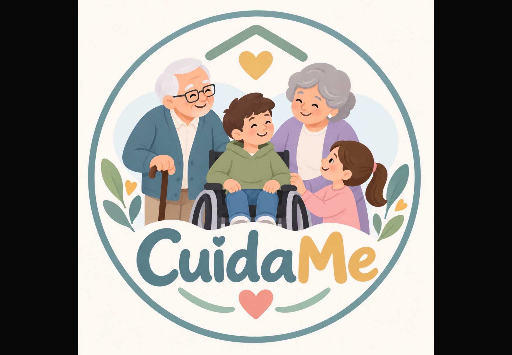

TU HISTORIA, CONTADA POR TI
Mi historia
Tus experiencias, tus gustos y tus metas son parte de quién eres.

MI RELATO
Cuéntame tu historia, tus pasiones…
Hola, soy Juan. Disfruto del jardín, la música y pasar tiempo con mi familia. Me gusta hacer las cosas a mi manera y celebrar cada pequeño logro.
Este relato es un ejemplo. En esta demo no se editan ni guardan historias.
MIS NECESIDADES DE MOVILIDAD
Lo que me ayuda a moverme con confianza
LOGROS Y MOMENTOS IMPORTANTES
Cada paso cuenta
- Disfruté de un paseo por el parque.
- Alcancé una meta personal de fisioterapia.
- Estoy explorando nuevas formas de organizar mis apoyos.